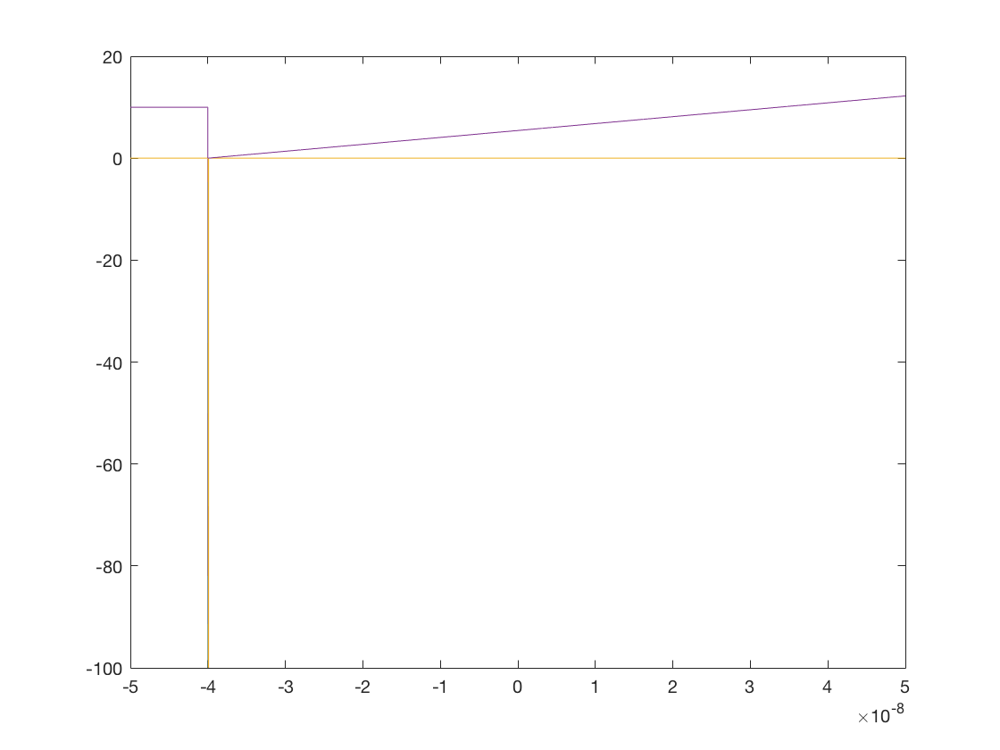

mo = 9.11e-31; %mass of electron h = 1.05e-34; %Js hbar = h/(2*pi); m = 0.22*mo; %effective mass cit: http://journals.aps.org/prb/pdf/10.1103/PhysRevB.57.1374 q = 1.60e-19; Kb = 8.61673e-5; L = 50e-9; %2L = 100nm N = 10000; x = linspace(-L,L,N)'; dx = x(2) - x(1); Eltrig = -135741908.264347; DeltaPot = Eltrig*dx; trig = 1:9000; %-0.2:0.2/900:-0.00002; U = [10*ones(1,1000) -DeltaPot*trig]'; % Two finite square wells of width 2w and distance 2a apart % w = L/50; a=3*w; %U = -200*(heaviside(x+w-a) - heaviside(x-w-a) + heaviside(x+w+a) - heaviside(x-w+a)); % Three-point finite-difference representation of Laplacian % using sparse matrices, where you save memory by only % storing non-zero matrix elements e = ones(N,1); Lap = spdiags([e -2*e e],[-1 0 1],N,N)/dx^2; % Total Hamiltonian %hbar = 1; m = 0.2; % constants for Hamiltonian H = -1/2*(hbar^2/m)*Lap + spdiags(U,0,N,N); % Find lowest nmodes eigenvectors and eigenvalues of sparse matrix nmodes = 10; options.disp = 0; [V,E] = eigs(H,nmodes,'sa',options); % find eigs [E,ind] = sort(diag(E));% convert E to vector and sort low to high V = V(:,ind); % rearrange corresponding eigenvectors % Generate plot of lowest energy eigenvectors V(x) and U(x) Usc = U*max(abs(V(:)))/max(abs(U)); % rescale U for plotting plot(x,V,x,Usc,'--k'); % plot V(x) and rescaled U(x) % Add legend showing Energy of plotted V(x) lgnd_str = [repmat('E = ',nmodes,1),num2str(E)]; legend(lgnd_str) % place lengend string on plot shg plot(x,100*V(:,1:10)+E(1:10)',x,U) hold on %surface(A)